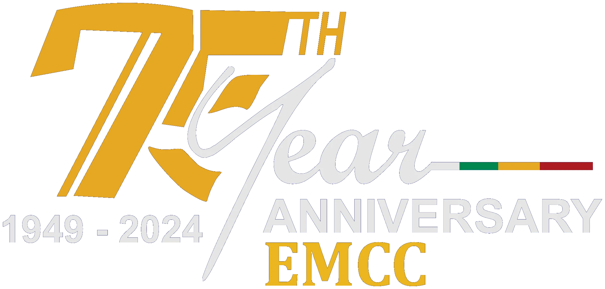
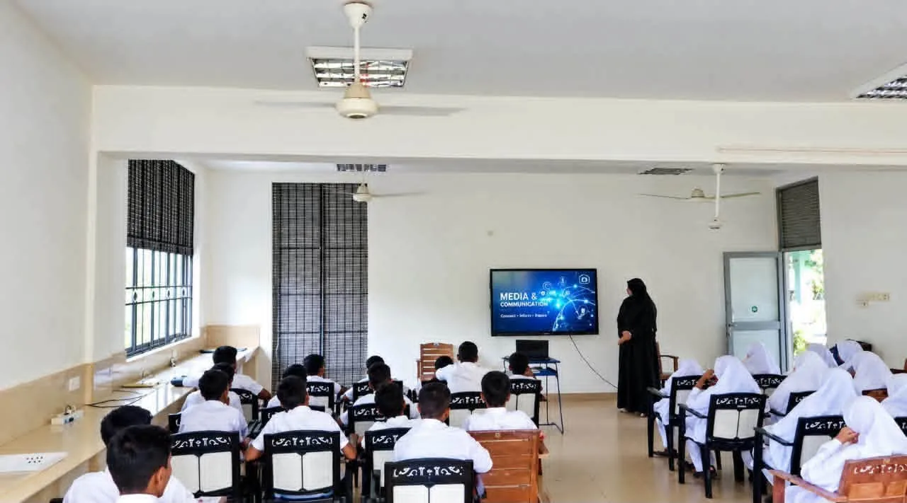
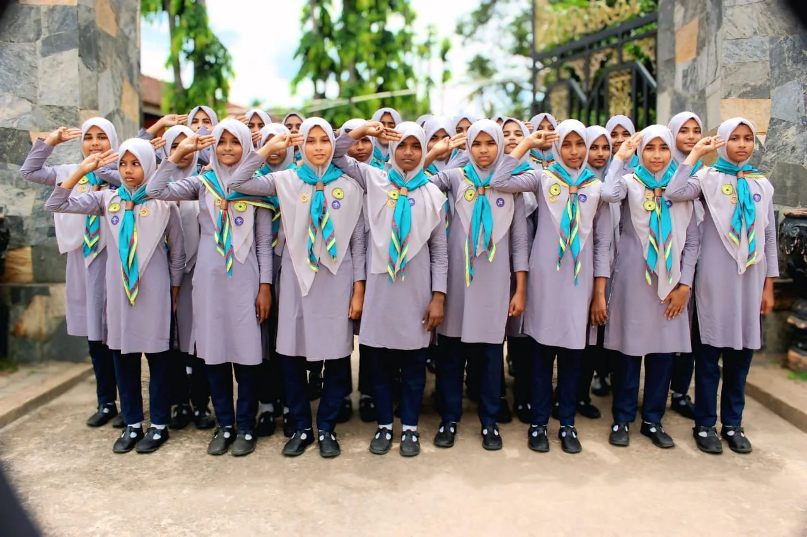
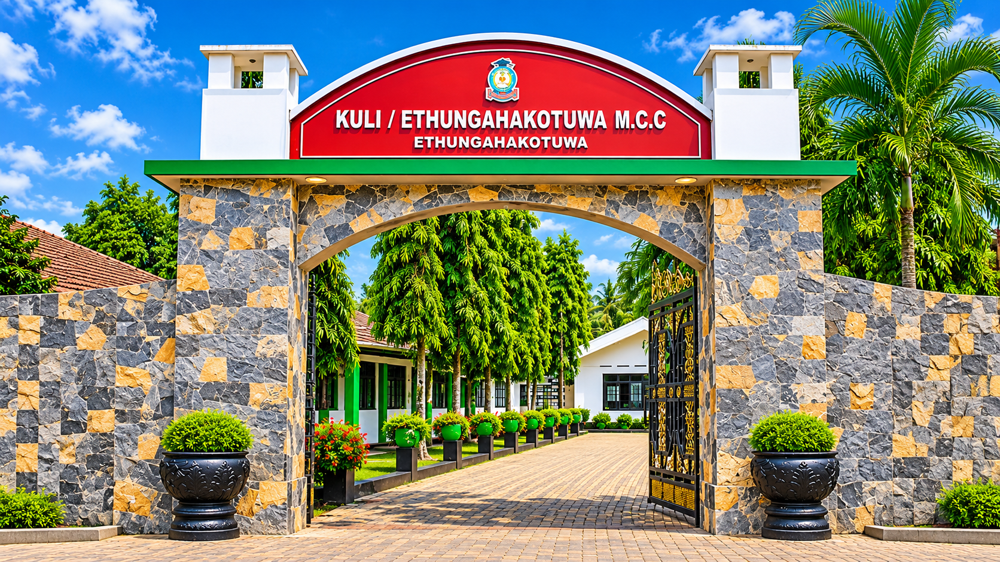

FEATURED · ANNIVERSARY
EMCC AURA 2027
A five-day anniversary exhibition celebrating the school’s heritage, learning and community.
Read more ↗ EMCCETHUNGAHAKOTUWA MUSLIM
EMCCETHUNGAHAKOTUWA MUSLIMWelcome to
Quality education for a prosperous life
Established on 1 December 1949, Ethungahakotuwa Muslim Central College has served generations of learners in the Kuliyapitiya Education Zone of Kurunegala District. Our vision is to nurture empowered students through quality education.
From primary and secondary learning to Advanced Level, EMCC champions knowledge, discipline and shared values.
Explore our school ↗* Figures from the school profile. Please contact the school office for current numbers.

A five-day anniversary exhibition celebrating the school’s heritage, learning and community.
Read more ↗
A moment of leadership and responsibility as new prefects were recognised at the school.
Read more ↗
Browse photographs of ceremonies, sports, community walks and everyday school life.
View gallery ↗Ethungahakotuwa, Sri Lanka · Programme details to be confirmed by the school.


Education at EMCC reaches beyond the textbook. From primary foundations to secondary development and Advanced Level pathways, qualified teachers support every learner.

Friendships, leadership, culture and service shape the EMCC experience, helping students discover their strengths and contribute with confidence.


Sport builds healthy habits, camaraderie and character, on the field and beyond it.


Since 1949 EMCC has grown with its community, guided by the mission of quality education for a prosperous life.
75 YEARS OF HERITAGE & COMMUNITY
AURA 2027 brings our school community together for a landmark anniversary exhibition — celebrating the journey of EMCC, showcasing learning and creating memories for generations to come.

A GLIMPSE OF EMCC
Photographs from the EMCC school archive, capturing everyday life, ceremonies and celebrations across the years.
Select any photograph to view it larger. Images are from the EMCC school archive.
SCHOOL INFORMATION
WE'RE HERE TO HELP
For school information, general enquiries and AURA 2027 updates, please contact the EMCC school office.
Main Street, Ethungahakotuwa,
Kurunegala District, Sri Lanka